The goal of today’s class is to show you some more advanced teachniques in R, beyond using dplyr for our basic operations with data:
Sort: Largest to smallest, oldest to newest, alphabetical etc.
Filter: Select a defined subset of the data.
Summarize/Aggregate: Deriving one value from a series of other values to produce a summary statistic. Examples include: count, sum, mean, median, maximum, minimum etc. Often you’ll group data into categories first, and then aggregate by group.
Join: Merging entries from two or more datasets based on common field(s), e.g. unique ID number, last name and first name.
The examples below have been chosen to reflect some of the problems encountered in students’ project work. I don’t suggest trying to follow along today, but rather focus on understanding what I show you. You can work through the examples at your leisure, or modify them to apply to your project. To run the code, you will need to install any required packages that are not already in listed in your RStudio Packages tab.
The message from thesse examples is that R is an incredibly powerful tool, capable of performing just about any analysis or data processing task you can imagine. Once you get confident in R, you’ll get used to looking for code examples and tutorials to solve the problems you encounter when working with data. That’s how I learned everything outlined below.
If you’re not sure what you are doing, however, seek help! The NICAR listserv, the main online discussion forum for data journalists, is a great place to start.
Some of the data will be loaded using web Application Programming Interfaces that are set up to provide data on demand online.
The rest of the data is here; unzip the folder and place it on your desktop. It contains the following folders and files:
ca_discipline Folder containing multiple CSV files, one for each each, detailing disciplinary alerts and actions issued by the Medical Board of California from 2008 to 2017. Processed from downloads available here. Each file contains the following variables:
alert_date Date alert issued.last_name Last name of doctor/health care provider.first_name First name of doctor/health care provider.middle_name Middle/other names.name_suffix Name suffix (Jr., II etc)city City of practice location.state State of practice location.license California medical license number.action_type Type of action.action_date Date of action.ca_tracts Shapefile of Census tracts in California, from the US Census Bureau.
oakland_eei.csv Data on educational attainment of children from low-income families (those qualifying for free or reduced price lunch) for schools in Oakland in 2015, originally compiled by Education Cities for the Education Equality Index, and processed/simplified for this class (there is more data available). Contains the following variables:
school_nameeei_score School performance, based on tests for all subjects and grades, on a 0-100 scale.charter Is the school a charter school? N or Y.pc_black pc_white pc_hispanic Percent of students from each of these racial/ethnic groups.enroll_100 Total number of students at the school, in multiples of 100.pc_fr_lunch Percentage of students on free or reduced price lunch.As usual, open RStudio, create a new script, save it into the folder with the data for this class, then set your working directory to the same folder.
Often data comes in a series of files, which you need to read into R and combine into a single data frame. This can be achieved using a for loop, a useful programming trick that allows you to iterate through a list of items, performing the same series of actions on each item. To obtain a single data frame with all the Medical Board of Califoria disciplinary actions from 2008 to 2017, we need to read in each file, and append it to the same data frame.
This is how to do it:
# required packages
library(readr)
library(dplyr)
# list files
files <- list.files("ca_discipline")
# create empty data frame
ca_discipline <- data_frame()
# loop to read in files, and append them to that data frame
for (f in files) {
print(f)
tmp <- read_csv(paste0("ca_discipline/",f), col_types = cols(
.default = col_character(),
alert_date = col_datetime(),
action_date = col_datetime()))
ca_discipline <- bind_rows(ca_discipline,tmp)
}
# cleanup
rm(tmp,files,f)
For loops in R have this general format:
for (item in list) {
# Do stuff involving each item
}
item can have any name you like; I usually give it the first letter of the name of the list I’m iterating through.
This example uses the function list.files to list all the files in the folder ca_discipline, then makes an empty data frame called ca_discipline using the dplyr function data_frame.
The loop prints each file name, then uses the read_csv function from readr to load each file into a temporary data frame called tmp, which gets overwritten in each iteration of the loop. The final step in each iteration of the loop is to append tmp to the ca_discipline data frame using the dplyr function bind_rows.
The read_csv function is a little more complicated than we’ve seen before. Because the files are in the ca_discipline folder, the location of each must be defined as ca_discipline/f using the paste0 function, which concatenates strings of text.
The read_csv function also defines the default data type for columns in the data, and gives the data type for any exceptions. Explicitly decaring the data types in a loop like this is a good idea, because any inconsistency in data types for each read_csv may otherwise cause the bind_rows function to fail. (Other data types include col_integer() for whole numbers and col_double() for numbers that may include decimal fractions.)
The rm function removes objects from your environment.
Often you need to make new columns in your data, particularly when simplifying a categorical variable with many categories into something more manageable. This can be done with in a dplyr mutate using the function case_when, which applies conditional statements.
Continuing from the example above, this code simplifies the action_types variable into a new variable type_edit with just three possibilities: Revoked, Surrendered, or Other.
ca_discipline <- ca_discipline %>%
mutate(type_edit = case_when(action_type == "Revoked" ~ "Revoked",
action_type == "Surrendered" ~ "Surrendered",
!grepl("Revoked|Surrendered", action_type) ~ "Other"))
View the data to see the new row:
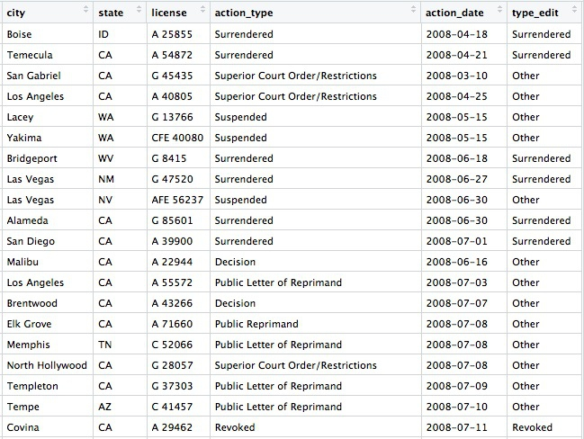
R can process and analyze geographic data, and then write the results to PostgreSQL for mapping in QGIS and further analysis with PostGIS. To see this in action, we’ll first work with some Census data, which can be loaded using US Census APIs with the tidycensus package, and Census shapefiles, which can be loaded using the tigris package. In addition to dplyr, this example uses rgdal, which reads and writes geographic data and handles its projection; RPostgreSQL, which connects to a PostgreSQL database; and rpostgis, to write geographic data into a PostGIS-enabled database table.
First, load all of the packages required for this example:
# load required packages
library(dplyr)
library(tidycensus)
library(tigris)
library(rgdal)
library(RPostgreSQL)
library(rpostgis)
tidycensus can pull data from the Census itself, run every 10 years, or the American Community Survey, an annual snapshot of the country which extrapolates from samples, producing estimates for variables(median household income, population for various races and ethnicities, and so on) for the last year, the last 3 years, or the last 5 years, for geographies of various types. The smaller the geographic area and the shorter the time period, the wider the margin of error. So when analyzing data from small geographic areas, such as Census tracts, it’s generally wise to use the 5-year estimates.
To pull data from a US Census API, you need a Census API key, which you can request from here.
This code creates a data frame showing all of the variables measured in the 2016 5-year American Community Survey:
# load Census API key
census_api_key("your key goes here", install = TRUE)
# get variables acs_2016 5 year estimates
acs_2016_variables <- load_variables(2016, "acs5", cache = TRUE)
View the data frame and use the search box to find the variables you need. Search for “median household income” and you should see the following:
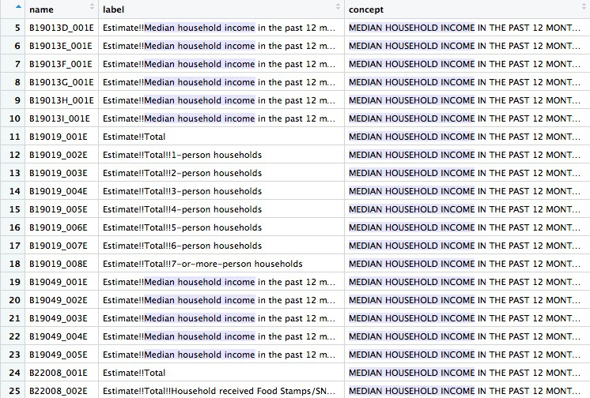
You will need to read the text under concept to see which variable you want. For the median household income across all households, irrespective of their size, the variable is B19019_001E. The E simply means “estimate”, and should be dropped when loading the variable using tidycensus.
The following code gets the median household income for all census tracts in California, as recorded in the 5-year estimates of the 2016 American Community Survey:
# use tidycensus to get data on medium household income for all Census tracts in California
ca_tracts <- get_acs(state = "CA",
year = 2016,
survey = "acs5",
geography = "tract",
variables = "B19013_001",
output = "tidy",
geometry = FALSE)
This should return a data frame with 8057 rows, giving the estimate and margin of error (moe) for each tract. Each tract also has an unique code, GEOID:
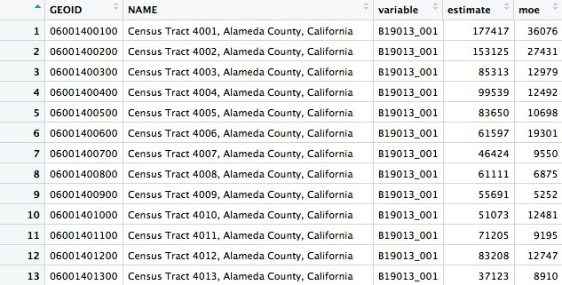
You can change the year and survey: use acs3 for 3-year estimates, for example. Available geographies include county and zcta, for zip code tabulation areas; but don’t specify a state when using ztca, because zip codes can cross state lines. (get_decennial is the equivalent function for pulling data from the full Census.)
Now we can use tigris to load a shapefile for California Census tracts, and produce a rough plot:
# Use tigris to load shapefile for Census tracts in California
ca_tracts_map <- tracts(state = "CA", year = 2016)
# plot
plot(ca_tracts_map)
The plot should look like this:
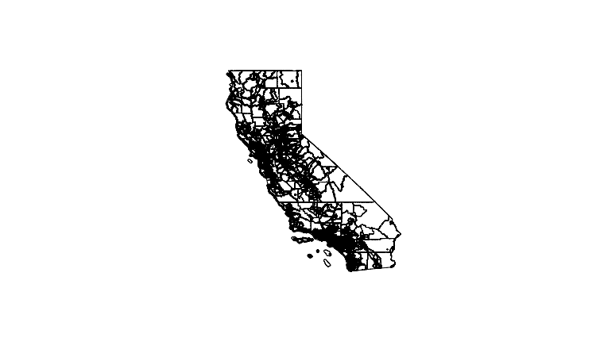
Often you won’t be able to load shapefiles from an API. But if you have downloaded a shapefile to your computer, you can load it like this:
# read in a shapefile from your computer
ca_tracts_map <- readOGR("ca_tracts_map", "ca_tracts_map")
This code uses the readOGR function from rgdal; the first mention of ca_tracts_map refers to the folder containing the shapefile, the second to the root name of all the files within.
Whether loading using tidycensus or from a saved shapefile, the data will load as a SpatialPolygonsDataFrame. Inspect the data connected to the map with this code:
# View the data associated with the map
View(ca_tracts_map@data)
@ specifies a particular attritubute of a spatial data frame, here its table of associated data.
The data associated with the map also contains GEOID codes for each tract:
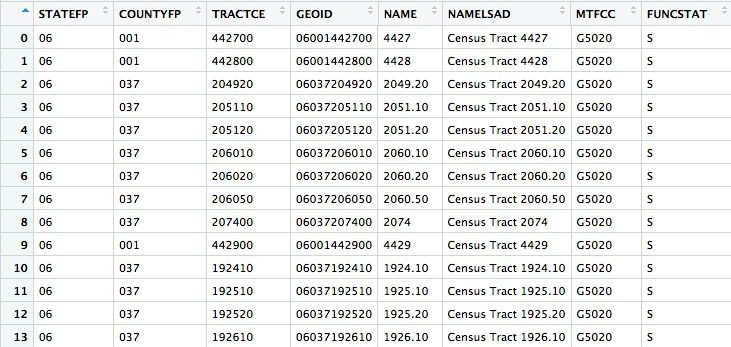
Now use dplyr to join the median housefold income data to the map, based on matching GEOID codes:
# join the median household income data to the map
ca_tracts_map@data <- inner_join(ca_tracts_map@data, ca_tracts, by = "GEOID")
# check the join has worked
View(ca_tracts_map@data)
Having joined the data you can export the shapefile to your computer like this:
# write out a shapefile
writeOGR(ca_tracts_map, "ca_tracts_income", "ca_tracts_income", driver = "ESRI Shapefile")
If you have your Postgres app running, you can also upload the spatial data frame straight to PostgreSQL/PostGIS like this:
# create new database, if required
system("createdb week14")
# set up connection to that database
drv <- dbDriver("PostgreSQL")
con <- dbConnect(drv, dbname = "week14", host = "localhost")
# reproject the data frame to the standard EPSG:4326
ca_tracts_map <- spTransform(ca_tracts_map, CRS("+init=epsg:4326"))
# insert into a PostGIS-enabled table
pgInsert(con,
name = "ca_tracts_income",
data.obj = ca_tracts_map,
geom = "geom",
overwrite = TRUE,
df.mode = FALSE, partial.match = FALSE, new.id = NULL,
row.names = FALSE, upsert.using = NULL,
alter.names = FALSE, encoding = NULL, return.pgi = FALSE)
The system function, from base R, sends a command to your computer’s Terminal, here to create a new database.
dbDriver and dbConnect are functions from RPostgreSQL, used to establish a connection to that database.
PostGIS normally expects tables to be in a standard Coordinate Reference Rystem called EPSG:4326(this is also the default in QGIS). So before uploading to PostgreSQL/PostGIS, use the spTransform function from rgdal to ensure your data is in this format.
Finally, use the pgInsert function from rpostgis to write the data into a PostGIS-enabled table; name defines the name of the new table, data.obj is the name of the spatial data frame in your R environment. If you want to append data to an existing table, use overwrite = FALSE (using the code above, with overwrite = TRUE, any existing table with the same name would be overwritten).
You may find it much more convenient to load maps into PostgreSQL/PostGIS from R than by the methods you’ve used previously.
Now you can load your map into QGIS as we did previously.
This example uses another API, shows how to turn data with latitude and longitude coordinates into a spatial data frame, and introduces hexagonal binning to analyze the density of points in QGIS.
These are the required packages:
# load required packages
library(dplyr)
library(rgdal)
library(RPostgreSQL)
library(rpostgis)
library(jsonlite)
If continuing from the example above, you only need load jsonlite, which can read data from JSON into an R data frame.
This page at DataSF contains incidents responded to by the San Francisco Police Department in 2018. The data is updated daily, with the most recently added incidents running two weeks behind the current date.
With frequently updated data like this, it’s a good idea to work with a script that can pull in the latest version of the data, rather than a downloaded snapshot. Then your analysis can be updated by simply running the entire script.
If you click on Export on the 2018 police incidents page, one of the options is to obtain the data using Socrata’s SODA API:
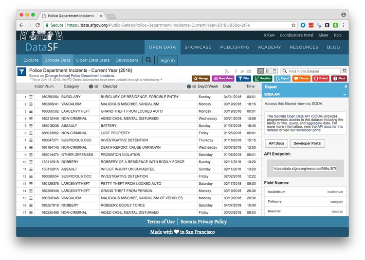
(Socrata is a company used by many state and local governments to put their data online.)
Notice that the endpoint is https://data.sfgov.org/resource/956q-2t7k.json. The SODA API includes many options, but to simply load the entire dataset into R, the code is simple:
# get San Francisco 2018 police incident data
incidents <- fromJSON("https://data.sfgov.org/resource/956q-2t7k.json?$limit=50000")
# check the data types for the data returned
glimpse(incidents)
If you don’t specify a limit, only the first 1,000 rows will be returned; use trial and error with the limit to make sure you get all the data.
This was the result of the glimpse on April 24, 2018:
Observations: 26,688
Variables: 13
$ date <chr> "2018-04-01T00:00:00", "2018-03-19T00:00:00", "2018-03-19T00:00:00", "2018-01...
$ address <chr> "0 Block of ROBINSON DR", "JOHNMUIR DR / LAKE MERCED BL", "800 Block of BRUNS...
$ resolution <chr> "NONE", "NONE", "NONE", "NONE", "NONE", "NONE", "NONE", "NONE", "ARREST, BOOK...
$ pddistrict <chr> "INGLESIDE", "TARAVAL", "INGLESIDE", "INGLESIDE", "INGLESIDE", "INGLESIDE", "...
$ incidntnum <chr> "180250054", "180208241", "186066502", "180018238", "180047271", "186033852",...
$ x <chr> "-122.42871668187439", "-122.4857362496041", "-122.45048298008807", "-122.420...
$ dayofweek <chr> "Sunday", "Monday", "Monday", "Sunday", "Thursday", "Friday", "Wednesday", "W...
$ y <chr> "37.70792190345863", "37.70815359983144", "37.70817029170297", "37.7083109744...
$ location <data.frame> c("37.70792190345863", "37.70815359983144", "37.70817029170297", "37.7...
$ time <chr> "00:01", "19:15", "00:01", "16:40", "15:15", "00:01", "13:06", "12:00", "08:4...
$ pdid <chr> "18025005405041", "18020824128150", "18606650206244", "18001823804134", "1800...
$ category <chr> "BURGLARY", "VANDALISM", "LARCENY/THEFT", "ASSAULT", "SUSPICIOUS OCC", "NON-C...
$ descript <chr> "BURGLARY OF RESIDENCE, FORCIBLE ENTRY", "MALICIOUS MISCHIEF, VANDALISM", "GR...
location is a data frame within this data frame, and every other variable is treated as text. So remove the location column and process the data with dplyr as follows:
# this ensures no loss of decimal places when converting text values for latitude and longitude
options(digits = 17)
# process the data
incidents <- incidents %>%
select(-location) %>%
mutate(date = as.Date(date),
latitude = as.double(y),
longitude = as.double(x),
hour = as.integer(substr(time,1,2)))
When using select, putting a dash in front of a column removes it from the data. So this code removes the nested data frame, converts the dates into dates, and creates new numeric columns for latitude, longitude, and the hour of the day on the 24-hour clock. The substr function extracts part of a string of text, here the first two numbers in the time variable.
Theft from cars is a big issue in San Francisco, but we want to ensure that we include all crime categories and descriptions that might be relevant:
# find categories and descriptions for thefts
theft_types <- incidents %>%
filter(grepl("theft|larceny", category, ignore.case=TRUE)) %>%
select(category, descript) %>%
unique()
From the data returned from this code, it seems we need to filter the data to include petty or grand left from locked or unlocked autos:
# filter grand or petty theft from locked or unlocked auto
car_breakins <- incidents %>%
filter(grepl("grand|petty", descript, ignore.case = TRUE)
& grepl("unlocked auto|locked auto", descript, ignore.case = TRUE))
# check the crime descriptions resulting from that filter
car_breakin_types <- car_breakins %>%
select(descript) %>%
unique()
View these two data frames to check that the data has filtered correctly.
The temptation is to load the data straight into PostgreSQL for mapping, but let’s first take a look at the addresses that show up most often in the data.
# count car breakins by address
car_breakin_locations <- car_breakins %>%
group_by(address) %>%
summarize(count = n()) %>%
arrange(desc(count))
Here are the top ten addresses:
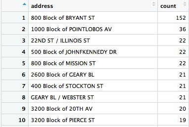
Wow, there seems to be an epidemic of car break-ins on the 800 block of Bryant Street! What could be going on? Let’s take a look at what’s there:
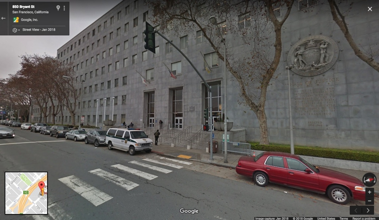
The San Francisco Hall of Justice is at 850 Bryant. Do we think that’s a real hotspot, or is it more likely that incidents without another location are being mapped to the courthouse by default? You’d want to speak to the person at SFPD who manages this data to find out, but I’m going to exclude this suspicious data before loading to PostgreSQL/PostGIS.
# remove incidents on 800 block of Bryant
car_breakins <- car_breakins %>%
filter(!grepl("800 block of bryant", address, ignore.case = TRUE))
Now write the data to PostgreSQL/PostGIS:
# you may need this line if your data frame is a tbl_df
car_breakins <- as.data.frame(car_breakins)
# make a data frame with just the latitude and longitude coordinates
xy <- car_breakins %>%
select(longitude,latitude)
# convert to a spatial points data frame
car_breakins <- SpatialPointsDataFrame(coords = xy,
data = car_breakins,
proj4string = CRS("+init=epsg:4326"))
# set up local connection to the database
drv <- dbDriver("PostgreSQL")
con <- dbConnect(drv, dbname = "week14", host = "localhost")
# insert into a PostGIS-enabled table
pgInsert(con,
name = "sf_car_breakins",
data.obj = car_breakins,
geom = "geom",
overwrite = TRUE,
df.mode = FALSE, partial.match = FALSE, new.id = NULL,
row.names = FALSE, upsert.using = NULL,
alter.names = FALSE, encoding = NULL, return.pgi = FALSE)
This code converts a regular data frame with latitude and longitude columns into a spaital data frame that can be mapped as points. If you have used readr to read in your data, it will be in tbl_df format, and you will need the first line to convert to a plain data frame.
The key step is to create a data frame called xy that has the data in the same row order (do not sort!), and just the columns longitide and latitude in that order. The SpatialPointsDataFrame function then uses this to convert the data to a spatial data frame, setting the Coordinate Reference System to EPSG:4326. (SpatialPointsDataFrame is from the sp package, which loads automatically with rgdal).
Writing the data to PostgreSQL/PostGIS is exactly as in the previous example.
Now we can switch to QGIS to map hotspots for car break-ins. For this we will use a QGIS Plugin called MMGQIS. Install it by selecting Plugins>Manage and Install Plugins... from the top menu. At the dialog box, search for MMGIS and install the plugin:
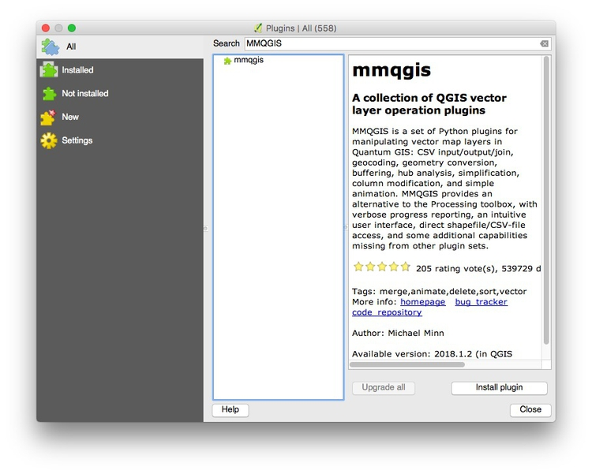
Now load the data in the sf_car_breakins table:
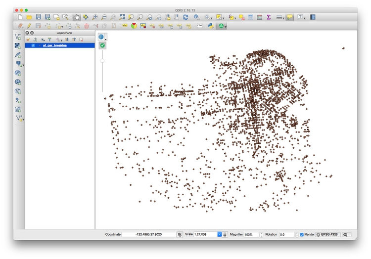
The problem with data like this is that points may be layered over the top of one another, which makes it hard to assess where the real hotspots are. One way around this is to impose a hexagonal grid on the map, and then count the points in each cell of the grid.
Select MMQGIS>Create>Create Grid Layer from the top menu and fill in the dialog box like this:
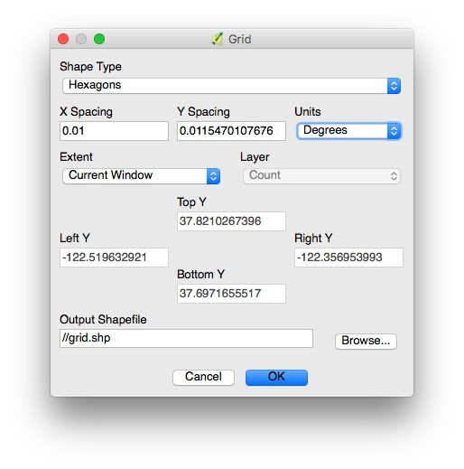
In practice, you will need to experiment with X Spacing (Y spacing) will adjust automatically, to get a grid with cells of reasonable size.
Now Browse... to save the shapefile that will be created into your data folder, in a new folder called grid, and click OK.
This should be the result:
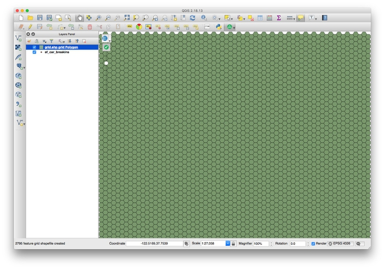
Now select Vector>Analysis Tools>Count points in polygon from the top menu, and click Run at the dialog box:
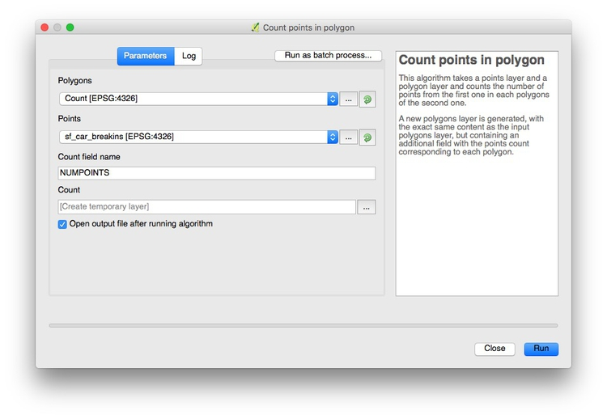
This will create a new layer, Count, with an Attribute Table with the count of the points in each grid cell in a column called NUMPOINTS:
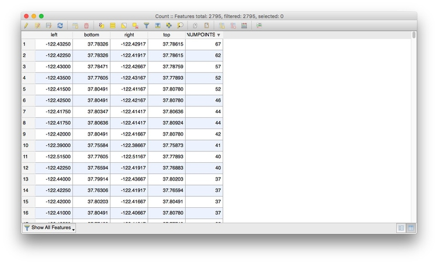
Right-click on the Count layer, select Save As... and save as an ESRI Shapefile in a new folder within your data folder.
Now create a new QGIS project and pull in an Open Streetmap layer using the Tile Map Scale Plugin. Right click on the layer, select Proporties and change its Render type to Singleband gray to obtain a neutral gray basemap:
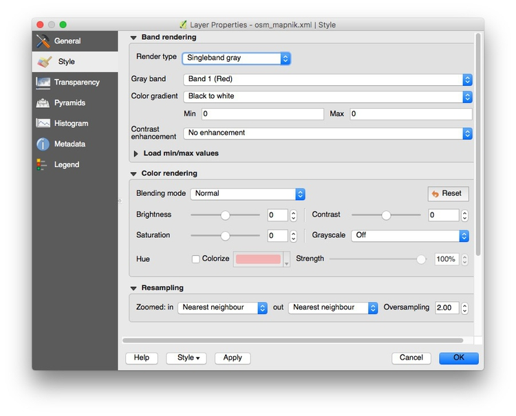
Select Project>Project properties from the top menu and checkEnable ‘on the fly’ CRS transformation (OTF), and clickOK`:
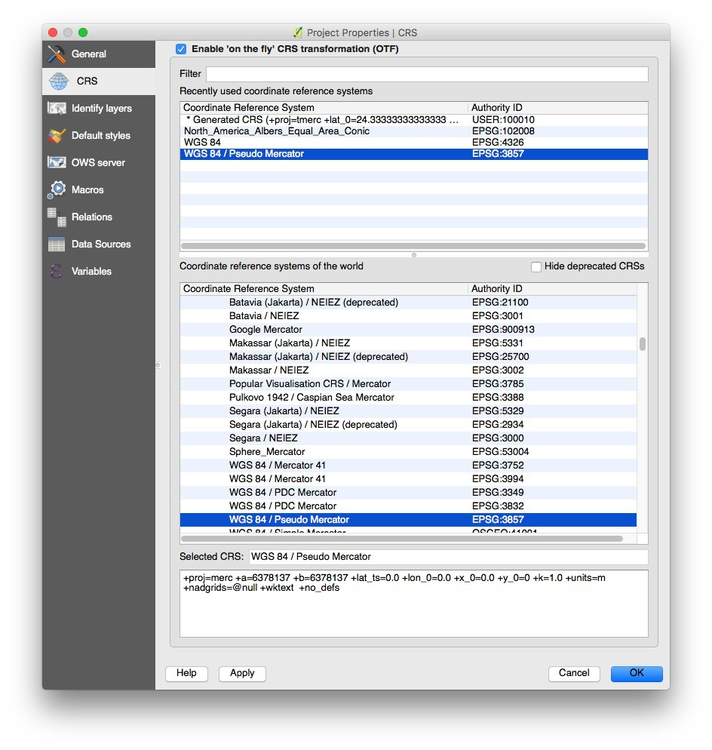
This will ensure that subsequent layers will be reprojected to the Web Mercator projection used by the basemap.
To load the gridded car break-in hotspot shapefile, click the Add Vector Layer icon, and browse to the shapefile we just made:
Zoom to this layer, then style it to make the layer semi-transparent, and with a Graduated color ramp based on the values in the NUMPOINT column. The map should now look something like this:
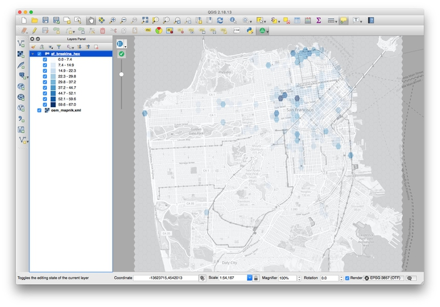
Zoom into the concentrations of darker hexagons. Why do you think these areas are hotspots for car break-ins?
Often data journallists must consider how a number of different variables affect an outcome. You might, for instance, have data on bail amounts set for people charged with crimes, and want to analyze how the variables including arrestees’ crimes, their age, and their race affects the bail amounts set.
Even if your storyfocuses on only one variable, such as the effect of race on bail amounts, simply ignoring the effect of other variables is a bad idea: You risk drawing false conclusions because of the problem of “lurking” variables, which we discussed in week 1.
In cases like this, you should consider trying regression analysis, in which you build a statistical model to describe how multiple variables affect the outcome you are analyzing.
The example that follows uses multiple linear regression to analyze educational attainment of students from low-income families (those qualifying for free or reduced price lunch) for schools in Oakland in 2015.
First, load the required packages:
# load required packages
library(readr)
library(dplyr)
library(ggplot2)
library(GGally)
library(forcats)
The only ones we haven’t encountered before are GGally and forcats. GGally is an extension to ggplot2 that creates specific plots that can be useful when performing statistical analyses, including regression; forcats is part of the tidyverse, designed for working with categorical variables; it can be used to arrange the categories of a categorical variable in a specific order, which you may need to do for a regression analysis.
The following code loads the data and then uses the GGally function ggpairs to plot relationships between the variables:
# load data
oakland_eei_2015 <- read_csv("oakland_eei_2015.csv")
# remove the school names, which we don't want to consider
oakland_eei_2015_pairs <- oakland_eei_2015 %>%
select(-school_name)
# visualize the relationship between the remaining variables
ggpairs(oakland_eei_2015_pairs) +
theme_minimal()
This should be the result:
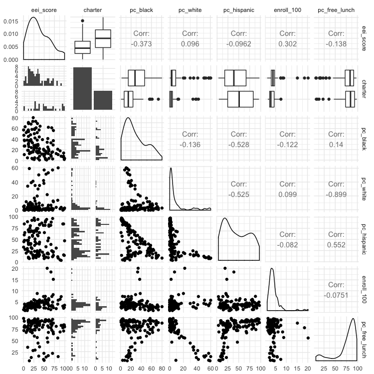
This matrix of charts may seem bewildering at first. The key to understand it is to read the column and row headers at top and right to understand which pairs of variables are being plotted or analyzed.
The diagonal line of charts from top left to bottom right have the same column and row headers, so refer to just one variable. For a continuous variable, they show density plot of the distribution of that variable; for a categorical variable they showing the number of observations in each category, for a categorical variable. So here, for example, the column chart for charter shows that there are roughly twice as many non-charter schools as charter schools. The density plot for eei_score, our outcome, shows that it has a skew to lower values. (If your outcome variable is highly skewed, you may need to “transform” it to better approximate a normal distribution before running a miltiple linear regression, by calculating the base 10 logarithm of each value, like this: variable_transform = log10(variable))
Above this diagonal line of charts, the matrix shows a correlation coefficient, a number measuring the strength of the correlation between two continous variables, or a box plot summarizing the distribution for each category for the relationship between a categorical and continuous variable. In a box plot, the black line in the middle of the box gives the median value, the box shows the 25% of values above and below that, and the lines extend out to the main range of values. Any “outlier” values deemed to fall outside this range appear as separate points.
Values for correlation coeffients can vary between -1 (a perfect negative correlation), through 0 (no relationship at all) to 1 (a perfect positive correlation); a positive correlation means that the two variables increase together; a negative correlation means that one increases as the other decreases.
We are most interested in how the various potential explanatory variables relate to the eei_score outcome, which is summarized in the top row of the matrix. (Tip: When running regression analysis, organize your data so that the outcome variable is in the first column, so that the plot matrix is drawn in this way.)
The box plots for charter indicate that charter schools tend to have better EEI scores. The correlation coefficients reveal that the two most influential continuous variables seem to be the percentage of black students (pc_black), which has a negative correlation with eei_score, and the size of the school (enroll_100), which has a positive correlation with eei_score.
Below the diagonal the relationships between the variables are plotted as scatterplots, for two continuous variables, or histograms for each category, to illustrate the relationship between a categorical and a continuous variable.
When building a regression model, it is tempting to include all possible explanatory variables. But the variables chosen should be independent (i.e. the vaues for one should not depend on the values for another) and should not be strongly correlated with one another. The three variables for racial/ethnic composition are obviously not independent, because a school that consists mostly of black students, for example, is bound to have relatively few Hispanic or white students. The matrix also shows that the percentage of white students is strongly correlated (correlation coefficient = -0.899) with the percentage of students on free or reduced-price lunches: the more white students, the fewer students tend to be on free or reduced-price lunches.
If choosing only one of the racial/ethic composition variables, it makes sense to choose the percentage of black students, which seems to be the most important. So let’s drop the other three racial/ethnic composition variables, and build a regression model:
oak_fit1 <- lm(eei_score ~ pc_free_lunch + pc_black + charter + enroll_100, data=oakland_eei_2015)
summary(oak_fit1)
This code uses the function lm, for linear model, to run a multiple linear regression. The outcome variable is given first, followed by a tilda (~), then the potential explanatory variables separated by + symbols).
This should be the output of the summary for the regression model:
Call:
lm(formula = eei_score ~ pc_free_lunch + pc_black + charter +
enroll_100, data = oakland_eei_2015)
Residuals:
Min 1Q Median 3Q Max
-46.155 -15.983 -2.347 12.154 47.044
Coefficients:
Estimate Std. Error t value Pr(>|t|)
(Intercept) 36.56627 8.32769 4.391 2.59e-05 ***
pc_free_lunch -0.10045 0.08688 -1.156 0.250040
pc_black -0.30586 0.10212 -2.995 0.003384 **
charterY 19.30876 4.53853 4.254 4.39e-05 ***
enroll_100 2.84883 0.74613 3.818 0.000222 ***
---
Signif. codes: 0 ‘***’ 0.001 ‘**’ 0.01 ‘*’ 0.05 ‘.’ 0.1 ‘ ’ 1
Residual standard error: 21.41 on 111 degrees of freedom
(3 observations deleted due to missingness)
Multiple R-squared: 0.3195, Adjusted R-squared: 0.295
F-statistic: 13.03 on 4 and 111 DF, p-value: 9.878e-09
The Adjusted R-squared value tells us how well the model explains the values for the outcome variable: A value of 0.295 means that the model explains only 29.5% of the variation in EEI scores. Still, three of the variables we considered seem to have a statistically significant influence on the scores, indicated by the asterisks.
School size, for instance, measured by enroll_100, is significant at a level of p < 0.001. This rates the chances of seeing the observed results by chance if there was actually no relationship between school size and EEI scores; 0.001 means a 1 in 1,000 chance.
The percentage of students on free or reduced lunches, however, seems to have no significant relationship with the EEI scores.
The Estimate column measures size of the effect of each variable in the model, while Std. Error provides a measure of the uncertainty around that estimate. Here, the EEI scores tend to increase by 2.84 plus-or-minus 0.75 points for each additional 100 students in a school, if the effect of the other variables is held constant. Meanwhile, EEI scores tend to drop by 0.31 ± 0.1 for each additional percentage point of black students in the school.
In a regression model like this, the effect of categorical variables is assessed by comparing each category against a reference category. For charter we have only two categories, not being a charter school (N) or being a charter school (Y). Here, the estimate shows us that not being a charter school is the reference, and being a charter school (charterY) is associated with an increase in EEI scores of 19.31 ± 4.54 points, if the effect of the other variables is held constant.
In practice, you may want to experiment with different combinations of variables, to see how they effect the model’s explanatory power. Here, we might try dropping pc_fr_lunch, especially as its strong negative correlation with pc_white means it may just be a proxy for the percentage of white students in the school — a variable we already decided to exclude.
oak_fit2 <- lm(eei_score ~ pc_black + charter + enroll_100, data=oakland_eei_2015)
summary(oak_fit2)
This should be the output of the summary:
Call:
lm(formula = eei_score ~ pc_black + charter + enroll_100, data = oakland_eei_2015)
Residuals:
Min 1Q Median 3Q Max
-47.770 -16.144 -2.293 12.326 48.813
Coefficients:
Estimate Std. Error t value Pr(>|t|)
(Intercept) 29.2924 5.4652 5.360 4.51e-07 ***
pc_black -0.3210 0.1014 -3.165 0.002000 **
charterY 19.0416 4.5395 4.195 5.49e-05 ***
enroll_100 2.8983 0.7460 3.885 0.000174 ***
---
Signif. codes: 0 ‘***’ 0.001 ‘**’ 0.01 ‘*’ 0.05 ‘.’ 0.1 ‘ ’ 1
Residual standard error: 21.44 on 112 degrees of freedom
(3 observations deleted due to missingness)
Multiple R-squared: 0.3113, Adjusted R-squared: 0.2929
F-statistic: 16.88 on 3 and 112 DF, p-value: 4.111e-09
The model still explains 20.3% of the variation in EEI scores.
After running a regression analysis like, a statistician will perform a number of tests and draw a series of charts to make sure that none of the assumptions of multiple linear have been violated. That’s beyond the scope of this class. But if you running a regression analysis for an important story, I strongly suggest getting expert statistical advice to ensure that your model isn’t lying to you!
One simple thing that can go wrong, however, is that apparent relationships between your explanatory variables and the outcome variable may be strongly influenced by a few outliers in the data. This is where the scatter plots in the plot matrix can be helpful. Here, they show that three schools are much larger than all the others, with values of enroll_100 of more than 15, that is they have more than 1,500 students. Looking at the bottom-but-one scatterplot in the first column of the matrix, we should be concerned that the relationship between school size and eei scores might be due to the influence of these schools. To test this, we can remove them from the data and run the regression analysis again:
# take out the three outliers for school enrollment
oakland_eei_2015_edit <- oakland_eei_2015 %>%
filter(enroll_100 < 15)
# fit the model again
oak_fit3 <- lm(eei_score ~ pc_black + charter + enroll_100, data = oakland_eei_2015_edit)
summary(oak_fit3)
This should be the output of the summary:
Call:
lm(formula = eei_score ~ pc_black + charter + enroll_100, data = oakland_eei_2015_edit)
Residuals:
Min 1Q Median 3Q Max
-45.122 -15.700 -2.461 11.135 49.081
Coefficients:
Estimate Std. Error t value Pr(>|t|)
(Intercept) 23.9248 7.6779 3.116 0.00234 **
pc_black -0.2894 0.1072 -2.700 0.00804 **
charterY 19.5028 4.5817 4.257 4.41e-05 ***
enroll_100 4.0856 1.4075 2.903 0.00448 **
---
Signif. codes: 0 ‘***’ 0.001 ‘**’ 0.01 ‘*’ 0.05 ‘.’ 0.1 ‘ ’ 1
Residual standard error: 21.55 on 109 degrees of freedom
(3 observations deleted due to missingness)
Multiple R-squared: 0.2997, Adjusted R-squared: 0.2805
F-statistic: 15.55 on 3 and 109 DF, p-value: 1.728e-08
The model has lost a small amount of explanatory power, and the significance level of school size has dropped to p < 0.01, but the overall conclusions are the same.
From this regression analysis, we now have some questions to investigate. Why do students from low-income families seem to be doing better in charter schools, and in larger schools? And why are they doing worse in schools with a larger percentage of black students? These questions can’t be answered from this data. But you might want to explore, through further reporting, the resources available to the schools in Oakland, or other socioeconomic characteristics of students — black students may be disadvantaged in various ways, other than their families’ incomes, for example.
Often, when running a regression analysis, you may need to chose which category for a categorical variable to use as the reference. If considering the effect of race/ethnicity on bail amounts, for instance, you would usually want to use white as the reference, and compare the outcome for other races/ethnicities to the outcome where the individual charged with a crime is white. By default, R will consider categories in alphabetical order, using the first in the list as the reference. But you can override this by explicitly turning a column containing text values into a categorical variable, and then reordering it, like this:
# turn charter into a categorical variable
oakland_eei_2015_edit <- oakland_eei_2015_edit %>%
mutate(charter = as.factor(charter))
# change from the dfeault alphabetical order
oakland_eei_2015_edit <- oakland_eei_2015_edit %>%
mutate(charter = fct_relevel(charter, "Y")
# view the new order
levels(oakland_eei_2015_edit$charter)
In this code, fct_relevel moves Y to the start of the list of values for the categorical variable charter. It works in exactly same way if you have more than two levels. Now the regression model will consider charter schools as the reference, and compare the effect of not being a charter school.
# fit the model again
oak_fit4 <- lm(eei_score ~ pc_black + charter + enroll_100, data=oakland_eei_2015_edit)
summary(oak_fit4)
This should be the output of the summary:
Call:
lm(formula = eei_score ~ pc_black + charter + enroll_100, data = oakland_eei_2015_edit)
Residuals:
Min 1Q Median 3Q Max
-45.122 -15.700 -2.461 11.135 49.081
Coefficients:
Estimate Std. Error t value Pr(>|t|)
(Intercept) 43.4276 7.2336 6.004 2.58e-08 ***
pc_black -0.2894 0.1072 -2.700 0.00804 **
charterN -19.5028 4.5817 -4.257 4.41e-05 ***
enroll_100 4.0856 1.4075 2.903 0.00448 **
---
Signif. codes: 0 ‘***’ 0.001 ‘**’ 0.01 ‘*’ 0.05 ‘.’ 0.1 ‘ ’ 1
Residual standard error: 21.55 on 109 degrees of freedom
(3 observations deleted due to missingness)
Multiple R-squared: 0.2997, Adjusted R-squared: 0.2805
F-statistic: 15.55 on 3 and 109 DF, p-value: 1.728e-08
The result is the same as before, except that now the Estimate is for charterN, and it has a negative value.
In some cases, your outcome measure may not be a continuous variable, but a binary outcome: In parole board decisions, for example, prisoners may be granted parole, or denied. For this type of analysis, you need to use logistic regression. Here you should code the outcome variable as either 0 or 1. The format for the R code to fit the modek is as follows:
# fit a logistic regression model
fit <- glm(outcome ~ variable1 + variable2 + variable3, family = binomial(link = "logit"), data = data_frame))
summary(fit)
There are many more types of statistic models that can be fitted to data, and R code in R follows the same general pattern. For a series of stories in 2017, for example, I used a form of machine learning called a random forest model to identify hidden spy planes in months of flight tracking data, training the model on the characteristics of known government surveillance aircraft. The code for this is here.
One you get comfortable with R, there are almost endless possibilities for data analysis. Here, for example, are two stories I did this year using the tidytext package for text analysis; the code is here and here.
Stack Overflow
For any work involving code, this question-and-answer site is a great resource for when you get stuck, to see how others have solved similar problems. Search the site, or browse R questions